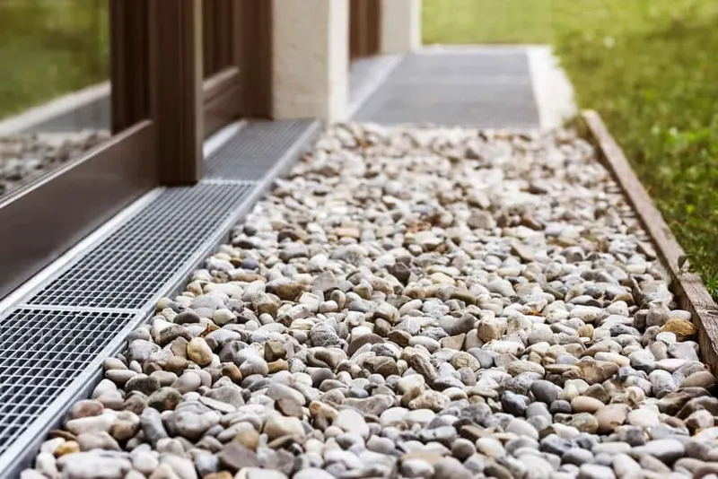
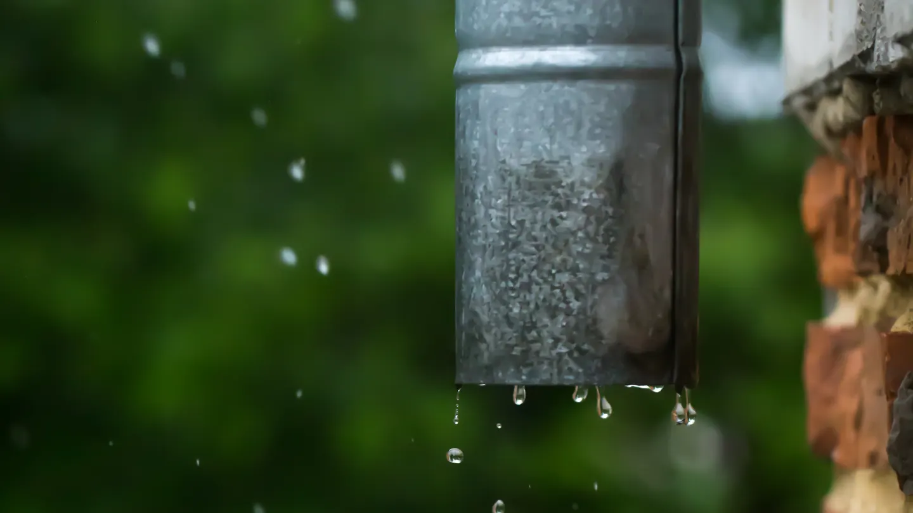
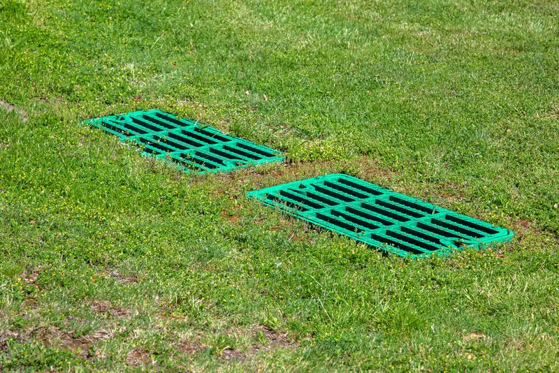
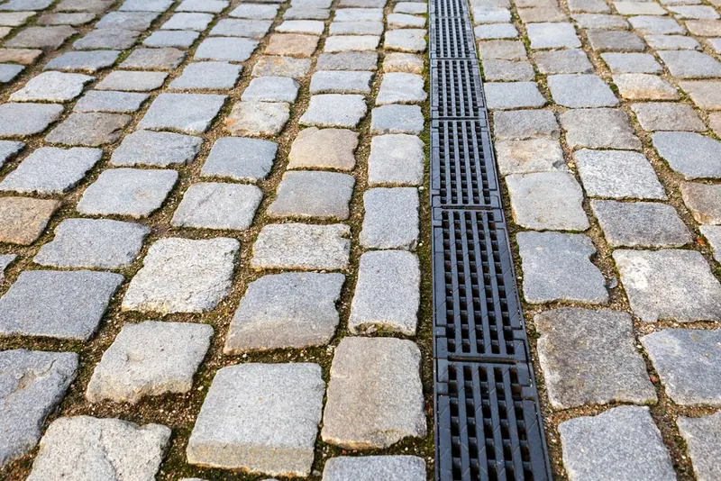
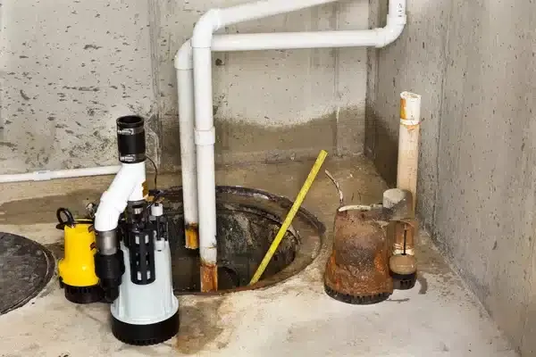
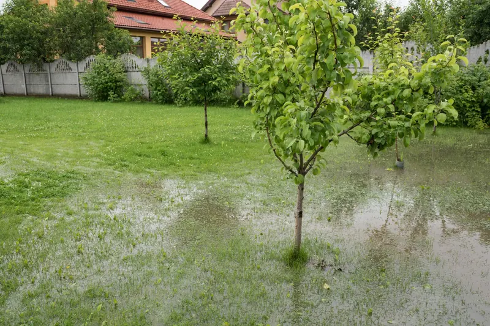
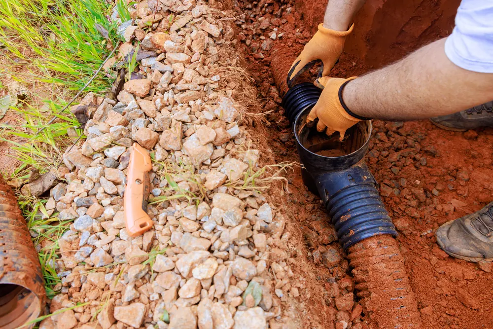
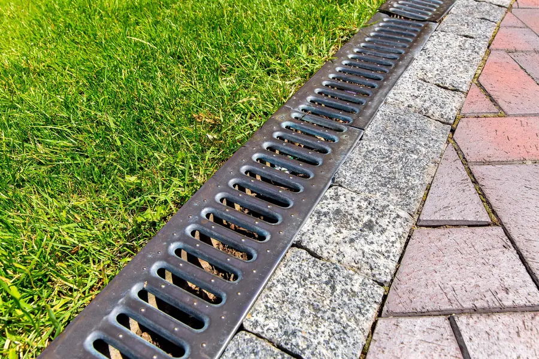
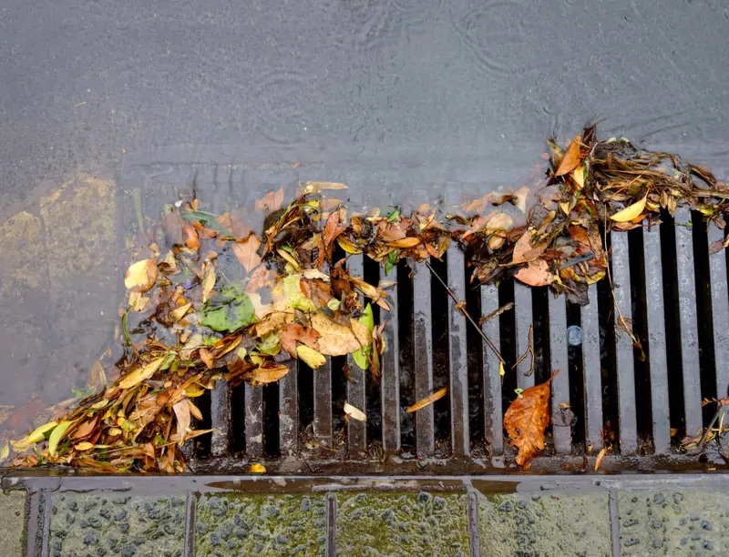
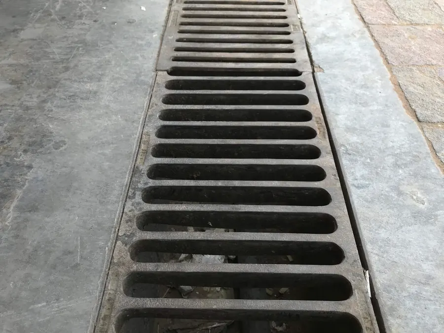

French Drains
Perforated pipes channel excess water away from structures, preventing waterlogging and soil erosion.
French drain installation

Drainage contractor, Baton Rouge, LA
Custom drainage systems for Baton Rouge homes and businesses, from urban lots to sprawling suburban yards along the Mississippi River.
Drainage systems in Baton Rouge
At Big Easy Drainage, we design and install drainage for Baton Rouge homes and businesses, from urban neighborhoods to sprawling suburban developments. We start with a free assessment of your topography and drainage needs, then build a system around the way water moves on your property.

Perforated pipes channel excess water away from structures, preventing waterlogging and soil erosion.
French drain installation
Collect water from several sources and stop debris from clogging the pipes that carry it away.
Catch basin installation
Remove excess water from driveways and patios, reducing the risk of standing water on hardscape.
Channel drain installationUnderground chambers that disperse runoff into the soil where there is little room for surface drainage.
Dry well installation
Swiftly remove water from basements or crawl spaces in flood-prone spots, preventing water damage and mold.
Sump pump installationWhy it matters here
Heavy downpours are a common occurrence in Baton Rouge, so drainage is a necessity, not a convenience. Water that is not managed leads to erosion, foundation damage and compromised landscaping, and neglected drainage can end in costly repairs and a lower property value.

Runoff from a heavy downpour strips soil from beds, slopes and the edges of your lawn.
Water left to collect against the house can work its way into the foundation.
Neglected drainage leads to costly repairs and lowers what the property is worth.
Free estimates
Call us or send the quote form, and we will set a time to assess your Baton Rouge property, talk through your drainage needs and design a solution around your goals. The estimate is free, and you know the plan before any work starts.
How we build it
Every Baton Rouge job begins with a comprehensive assessment of your property's topography and drainage requirements. We then design a customized system, install it with durable materials and equipment, and keep the construction efficient so the disruption to your property stays small.

We study the slope of your lot and where water accumulates before we recommend anything.
The design matches the unique characteristics of your Baton Rouge landscape.
Durable materials, the right equipment and a process that keeps disruption to a minimum.
Choosing a contractor
Look for drainage experience in Baton Rouge, a range of systems and a design tailored to your layout, soil type and water patterns. Our team knows the local landscape and weather, and we take on projects of every size, from residential yards to commercial properties.

Your layout, soil type and water patterns shape the system we build.
We choose materials and equipment for the longevity of the system.
We listen to your concerns, explain the options and keep you updated.
French drains, catch basins, channel drains, dry wells and sump pumps.
We handle residential yards and commercial properties alike.
We assess your property and discuss your needs before you commit.
About Baton Rouge, LA
Baton Rouge, the state capital, sits on the east bank of the Mississippi River and averages about 62 inches of rain a year, according to its climate record. With that much water arriving in heavy bursts, every yard needs a planned path to carry runoff away from the house.

Baton Rouge is the capital of Louisiana and the parish seat of East Baton Rouge Parish.
At 450 feet, the Louisiana State Capitol downtown is the tallest state capitol in the United States.
The French name, le baton rouge, means "the red stick", after a red pole French explorers saw marking a tribal boundary.
Service areas
Besides Baton Rouge, we install and repair drainage in Covington, Gretna, Hammond, Kenner, LaPlace, Madisonville, Mandeville, Slidell and St Rose, all from our base in New Orleans. If your town is not on the list, call us, because we may still serve it.
About the city
A quick look at where Louisiana's capital city came from and how big it is today.
French-Canadian explorer Pierre Le Moyne d'Iberville named the area "le bâton rouge" while traveling up the Mississippi River in 1699. The town was officially incorporated as Baton Rouge in 1817.
The 2020 Census counted 227,470 people in Baton Rouge, and the July 1, 2025 estimate is 222,795. The city covers 86.32 square miles of land in East Baton Rouge Parish.
Baton Rouge became Louisiana's capital in 1845 under a new state constitution. Local officials picked high ground on a natural levee, safe from the Mississippi's seasonal floods, for the statehouse.
Around town
Four places that show off the capital city's history, science and riverfront.
The State Capitol rises 450 feet with 34 floors and was finished in 1932. Its 27th floor observation deck looks over the city from 350 feet up, and admission is free.
Architect James Dakin designed this Gothic statehouse, and the Legislature first met inside in January 1850. Today the "castle" is a museum about Louisiana history and the democratic process.
The Louisiana Art and Science Museum pairs changing art exhibitions with the Irene W. Pennington Planetarium. Saturday family stargazing sessions at 10 AM are included in general admission.
Downtown, the Fletcher-class destroyer USS Kidd (DD-661) is paired with the Louisiana Veterans Museum. The ship is currently in Houma for drydock repairs, while the museum stays open daily.
Nearby
Baton Rouge sits west of the other communities we serve, so each one lies to its east or southeast.
About 40 miles east of Baton Rouge in a straight line, making it the closest of the group.
About 47 miles east-southeast of Baton Rouge, along the river corridor toward New Orleans.
About 58 miles east of Baton Rouge, on the north shore of Lake Pontchartrain.
About 59 miles east-southeast of Baton Rouge, just upriver from New Orleans.
Did you know
A few stories behind the city's landmarks and its role as the state capital.
The 1845 constitution required the capital to sit "not less than 60 miles from the city of New Orleans." Leaders worried about wealth, power and distractions concentrated in the Crescent City.
The original red pole is said to have stood at Scott's Bluff, by Southern University's campus. A commemorative Red Stick sculpture by Frank Hayden now stands on that same spot.
The current State Capitol was completed after only 14 months in 1932. It stands on a 27-acre tract and cost about $5 million to build.
After Civil War damage, architect William A. Freret rebuilt the old statehouse and added a fourth floor. His design also added a stained glass dome and a cast iron spiral staircase, finished in 1884.
Getting around
The Capital Area Transit System (CATS) runs the city's buses and its paratransit service.
CATS provides bus service to residents of and visitors to Baton Rouge. Buses run 5:00 a.m. to 10:00 p.m. on weekdays, with shorter hours on weekends.
CATS routes include 047 Highland Rd / LSU, 044 Florida Blvd and 041 Plank Rd. Riders can track buses in real time with the MyStop app.
Riders whose disability prevents them from using regular buses may qualify for CATS On Demand paratransit. The fare for eligible riders is $1.75 each way.
FAQ
These are the questions Baton Rouge homeowners and business owners ask most before a drainage project starts. If yours is not here, call us or request a free quote, and we will answer it when we come out to look at your property.

Baton Rouge gets heavy rainfall, and improper drainage can lead to erosion, foundation damage and compromised landscapes. A working drainage system helps prevent costly damage and protects your property's value.
Look at experience, the range of drainage systems they install, their reputation and how clearly they price and communicate. A reliable contractor tailors the solution to your property instead of using one design everywhere.
It begins with a property assessment, followed by a customized design. Our team then builds the system with durable materials and equipment, so it stays effective for the long term.
Yes. A drainage system should fit your property's layout, soil type and water accumulation patterns. We design every Baton Rouge system around those three things.
Yes. We handle projects of all sizes in Baton Rouge, from residential yards to commercial properties.
Where there is limited space for surface drainage, a dry well can collect runoff underground and release it slowly into the soil. We confirm the right fit when we assess your lot.
Yes. In areas prone to flooding or water accumulation, a sump pump swiftly removes water from basements or crawl spaces and helps prevent water damage and mold growth.
Call us at (504) 285-9658 or fill out the quote form. We will schedule a consultation, assess your property and explain the solution before any work starts.
Free estimates
Tell us where water collects on your Baton Rouge property and we will schedule a consultation to assess it. You will know the design and the cost before any work starts.